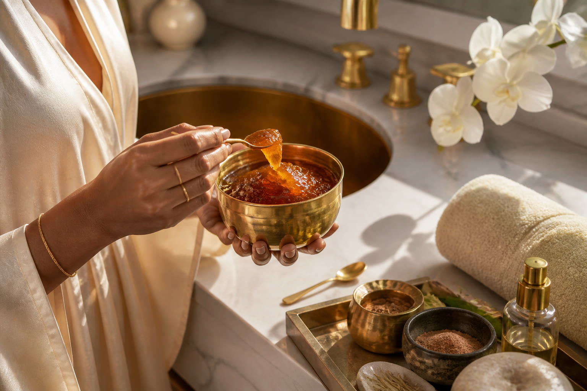
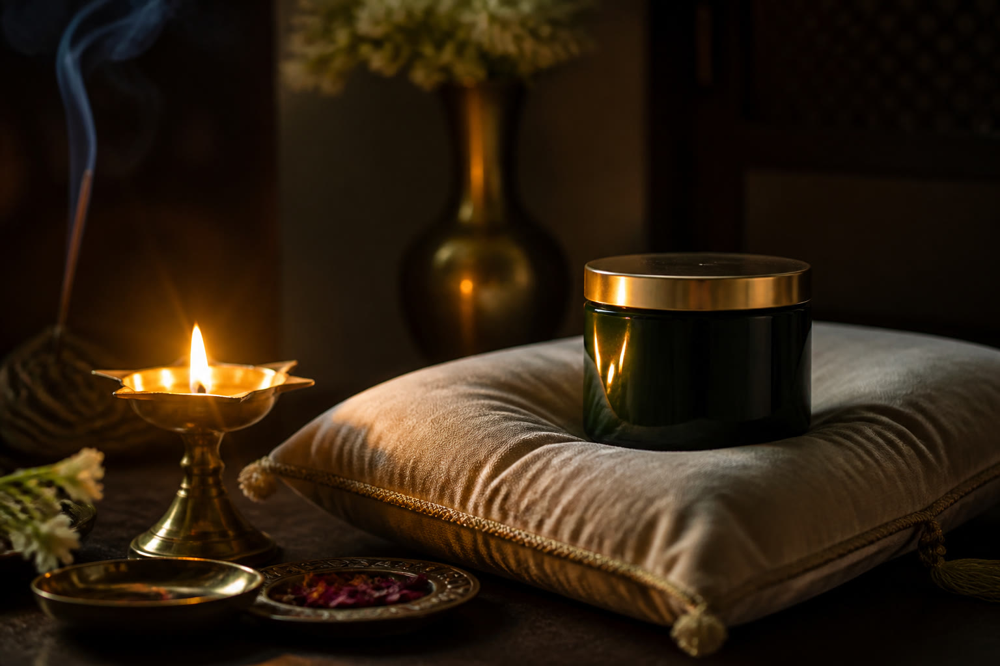

The sequence
A luxury Ayurvedic house does not shout “take daily.” It composes hours. These gestures are invitations. Directions on the finished pack will govern use.

Dawn
Chyawanprash belongs here: a gold lid unscrewed, a spoon of dark conserve, the spices blooming before tea. Daily Fibre follows as a tall glass, stirred and waited upon until the husk clouds the water.
Leave the vessels out. The point of Tej Kaya is that they improve the room while they wait for you.
A day in the house
Chyawanprash
Before caffeine. Sit. Let the jam warm on the tongue. This is breakfast’s first punctuation, not a supplement swallowed in a car.
Daily Fibre
A scoop, cool water, a minute of patience. Drink. Keep a second glass nearby. Regularity as a luxury of attention.
Urinary Care · Prostate Care · Piles Care
Capsules live with grooming, not with first-aid. A teak tray, a glass of still water, the same hour each day. Discretion is part of the design.
Evening
A diya or a low lamp. Capsules if they belong to night. The gold lid returned. The house closed until morning.
Ritual copy is atmospheric. It is not dosage, diagnosis or a substitute for a physician. Finished directions will appear on pack.
Dusk
Light the diya. Close the lid. Let the body keep its own counsel.

Early access
You are on the list.